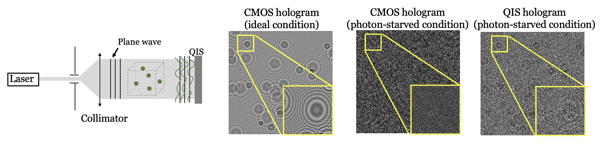

Digital holography (DH) is a powerful imaging modality that is capable of capturing the object wavefront information, making it very valuable for diverse scientific research applications. Generally, it requires ample illumination to enable good fringe visibility and a sufficient signal-to-noise ratio. As such, in situations such as probing live cells with minimal light interaction and high-speed volumetric tracking in flow cytometry, the holograms generated with a limited photon budget suffer from poor pattern visibility. While it is possible to make use of photon-counting detectors to improve the hologram quality, the long recording procedure coupled with the need for mechanical scanning means that real-time extremely low light holographic imaging remains a formidable challenge. Here, we develop a snapshot DH that can operate at an ultra-low photon level (less than one photon per pixel). This is achieved by leveraging a quanta image sensor to capture a stack of binary holographic frames and then computationally reconstructing the wavefront through integrating the mathematical imaging model and the data-driven processing, an approach that we termed PSHoloNet. The robustness and versatility of our DH system are demonstrated on both synthetic and experimental holograms with two common DH tasks, namely, particles volumetric reconstruction and phase imaging. Our results demonstrate that it is possible to expand DH to the photon-starved regime, and our method will enable more advanced holography applications in various scientific imaging systems.
The Gabor holographic imaging setup together with a quanta image sensor (QIS) as the recording device is designed. Among various photon-counting image sensors reported over the past decade, QIS stands out with its small pixel size (e.g. $\leq 1um$), high photon detection efficiency, and ultra-low readout noise. This leads to various applications in the low quanta flux regimes including security, night vision, quantum computing. In this work, for the first time, it is integrated into a coherent imaging system.
In this work, we designed a physics-informed wavefront reconstruction network called PSHoloNetTo reconstruct the object wavefront information from the QIS recordings. To demonstrate the feasibility through synthetic experiments, we show two DH applications, namely, 3D particles volumetric reconstruction and phase imaging.
@article{zhang2023photon,
title={Photon-starved snapshot holography},
author={Zhang, Yunping and Chan, Stanley H and Lam, Edmund Y},
journal={APL Photonics},
volume={8},
number={5},
pages={056106},
year={2023}
}